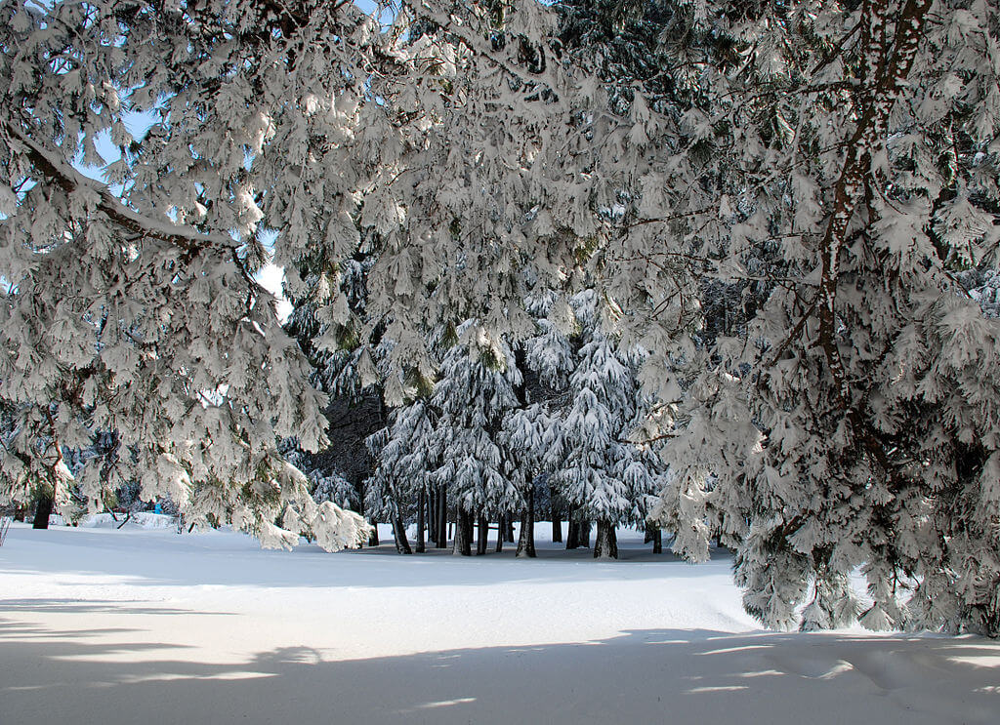
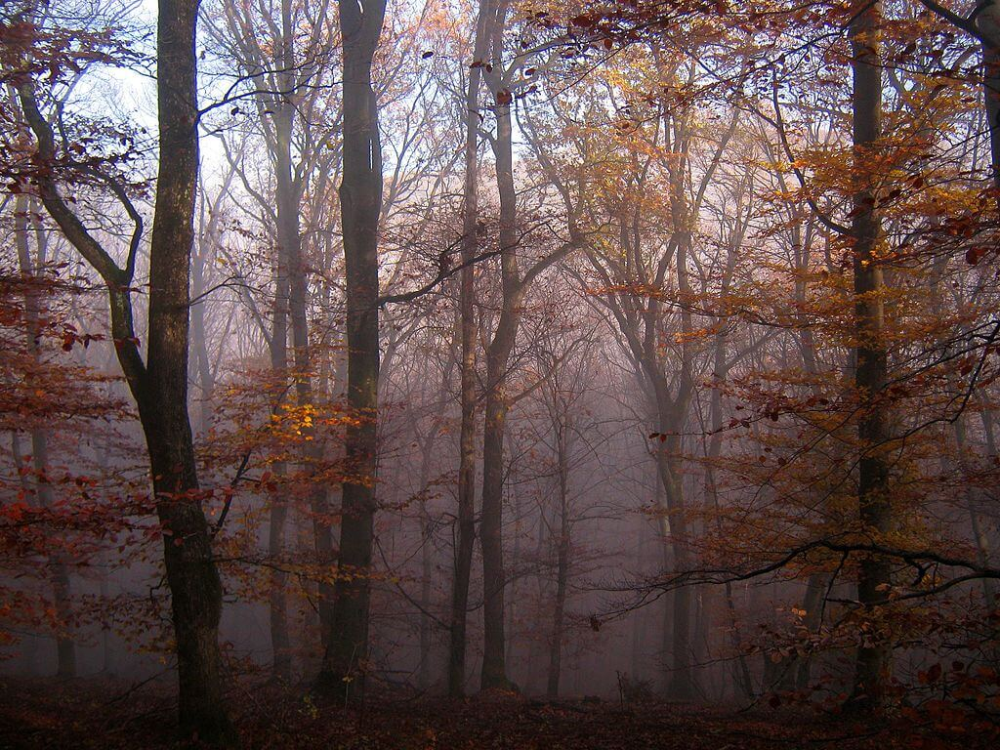
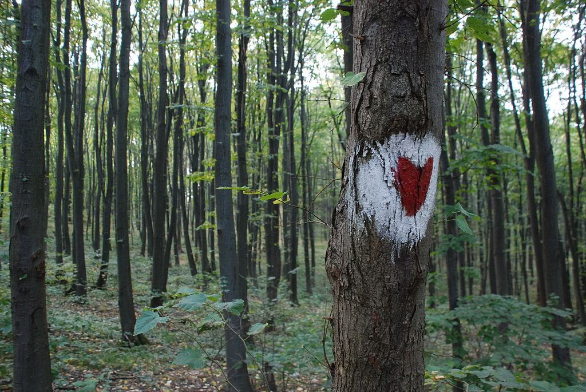
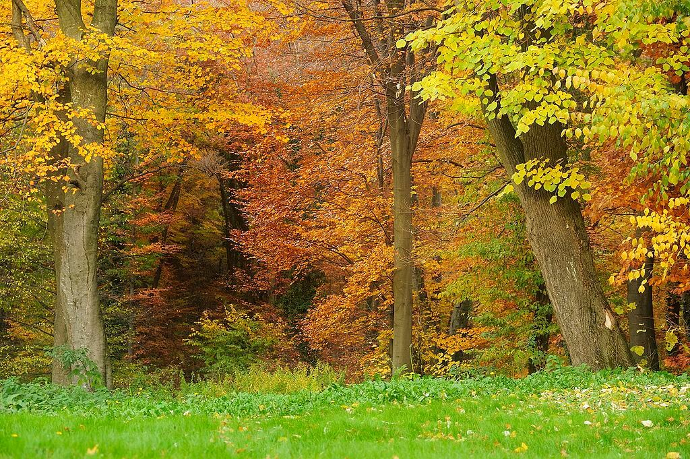

90% pokrivenost šumom
lipa, hrast, bukva...




Naziv Nacionalnog parka potiče od naziva istoimene planine, a naziv Fruška gora nosi u svom pridevskom obliku etnik Frug u značenju "Roman", te na taj način ime ove planine čuva uspomenu na jednu etničku zajednicu koja je davno nestala iz ovih krajeva. Fruška gora je proglašena nacionalnim parkom 1960. godine, u cilju obezbeđenja trajne zaštite. Područje aktivne zaštite obuhvata 25.525 ha.
Fruška gora je usamljena ostrvska planina u Panonskoj niziji. Prema jugu i severu jako je razuđena planinskim i rečnim tokovima, pri čemu se od glavnog uskog grebena pružaju pojedinačni, bočni grebeni, najčešće sa vrlo srtmim padinama.
Lokacija, specifična geološka istorija, različiti mikro-klimatski uslovi, čine ovu planinu veoma interesantnom i važnom za različite naučne oblasti. Zahvaljujući jedinstvenim i veoma brojnim fosilnim ostacima flore i faune, Fruška gora se naziva i "ogledalom geološke prošlosti".
Osnovna karakteristika ove oblasti je postojanje brojnih ugroženih, retkih i zaštićenih biljnih i životinjskih vrsta. Pašnjaci i plodno zemljište, vinogradi i voćnjaci, ukrašavaju padine i niže delove Fruške gore, dok su površine koje se nalaze na visinama iznad 300 metara nadmorske visine pokrivene gustim, listopadnim šumama. Posebnu vrednost i biser Fruške gore predstavlja 16 pravoslavnih manastira, poznatih po specifičnoj arhitekturi, bogatim riznicama, bibliotekama i freskama. Fruška gora takođe krije i brojne arheološke lokalitete iz praistorijskog i istorijskog perioda.
Zahvaljujući bogatstvu prirodnih resursa, predivnim pejzažima, izuzetnom šarmu i lepoti ove planine, Fruška gora je idealno mesto za odmor i rekreaciju koje će vas približiti prirodi.
Riznica biljnog sveta Fruške gore obuhvata 1500 vrsta, od kojih je 700 lekovitih biljaka, a čak 69 je zaštićeno kao prirodne retkosti Srbije. Od 700 vrsta lekovitih biljaka veći deo čine autohtone (divlje) vrste, dok manji broj pripada alohtonim (gajenim) biljkama. U poslednja dva veka na području Fruške gore je pronađena brojna fosilna flora, u koju spadaju palme, razne vrste čempresa, sekvoja, lovor i druge vrste koje su nekada činile vegetaciju, na osnovu čega je rekonstruisan tok prirodnih promena u poslednjih 200 miliona godina pa sve do danas.
Obilje vode, prostranih livada i gustih šuma omogućava izuzetne uslove za život i opstanak raznolike fruškogorske faune. Područje Fruške gore je interesantne geološke prošlosti, tako da je u njenim sedimentima otkrivena veoma raznolika fosilna fauna. Najznačajniji lokaliteti fosilnih ostataka su Čerevićki potok, gde su pronađene 164 fosilne vrste, i usek kod Grgetega, sa 120 vrsta, i predstavljaju jedinstvene slučajeve u Evropi. Interesantni su fosili mamuta, bizona, irvasa i drugih sisara, koje je pre oko milion godina lovio primitivni čovek na ovim prostorima.
Na Fruškoj gori gljive žive na svim tipovima staništa, na pašnjacima, u ritovima, plavnim livadama i šumama, odnosno svuda gde se zemljišta ne obrađuju. Do sada je na Fruškoj gori registrovano oko 2000 vrsta. Gljive su veoma raznilika grupa organizama i većina njih su veoma sitne i često specifične u pogledu staništa odnosno domaćina na kome se razvijaju ili sa kojim ulaze u simbiozu. Zbog svojih dimenzija ove vrste se teže uočavaju u prirodi. Većina ljudi gljive povezuje sa pečurkama, a to su ustvari samo plodna tela viših gljiva. Neke od njih se mogu koristiti za ishranu ljudi ali prilikom sakupljanja treba biti maksimalno oprezan jer su mnoge vrste veoma slične a među njima su i otrovne vrste.
Na Fruškoj gori se nalazi 16 veštačkih jezera. Od toga je 13 planski izgrađenih akumulacija za potrebe navodnjavanja i sprečavanja plavljenja obradivih površina. Jezera kao što su Beli kamen i Ledinačko su nastala neplaniranim plavljenjem rudarskih kopova. Većina jezera su poribljena, pogodna za sportski ribolov i privlače zaljubljenike u prirodu.
Brojne lokacije kao što su izletišta, jezera, šumske staze, vidikovci i vazdušne banje Fruške gore nude veoma širok spektar zanimljivosti za prave ljubitelje prirode i rekreacije. Mirna i gostoljubiva fruškogorska mesta, prelepi pejzaži kao na slikama velikih majstora, pogled na prostrane ravnice i vinograde na obroncima predstavljaju raj za pronalaženje duhovnog mira i ravnoteže. Sa druge strane, riznice geološkog i kulturno-istorijskog nasleđa pričaju zanimljive priče od praistorije pa sve do današnjih dana. Posebno mesto zauzimaju fruškogorski manastiri, koji predstavljaju stubove duhovnosti i kulture naroda na ovim prostorima. Sve ove odlike Fruške gore čine je atraktivnom i primamljivom destinacijom i predstavljaju poziv za turiste svih profila da je posete i uživaju u njenim čarima. Turizam u Vojvodini odnosno Srbiji može se ponositi bogatstvom Fruške gore.
Ovaj deo Panonske nizije bio je tokom čitave istorije pozornica burnih istorijskih događaja koji su često dovodili do nestanka stare i pojave sasvim nove populacije ljudi. Borbe oko rimskih severnih granica, pad Sirmijuma, nadiranje Avara i Slovena i njihove borbe sa Vizantijom predstavljaju ulazak u srednji vek, a borbe Avara sa Francima (791-796) uvode panonsku ravnicu u sferu ekspanzije Zapadnog carstva. U to doba se učvršćuje crkvena organizacija i Srem dobija episkopiju, a zatim u XIII veku biskupiju. U Banoštru se krajem XII veka osniva benediktanski manastir. Turski upadi u Srem od 1390. i 1392. najavljuju novo nemirno poglavlje istorije.
Manastiri Fruške gore su jedinstvena grupa sakralnih objekata nastala u periodu od XV do XVIII veka. Od 35 izgrađenih manastira do danas je sačuvano 16. Ti manastiri su kroz istoriju predstavljali simbol nacionalnog otpora Srba Turskoj imperiji i zaštitnike velikog nacionalnog blaga, oličenog u sakralnoj umetnosti i arhitekturi, očuvanju duha i kolektivnog pamćenja naroda. Danas su aktivni sledeći manastiri: Krušedol, Petkovica, Rakovac, Velika Remeta, Divša, Novo Hopovo, Staro Hopovo, Jazak, Mala Remeta, Grgeteg, Beočin, Privina Glava, Šišatovac, Kuvežedin, i Vrdnik - Ravanica. Po istorijskim izvorima ovi manastiri su nastali u prvoj polovini šesnaestog veka, ali legende govore da su nastali u periodu između dvanaestog i petnaestog veka.